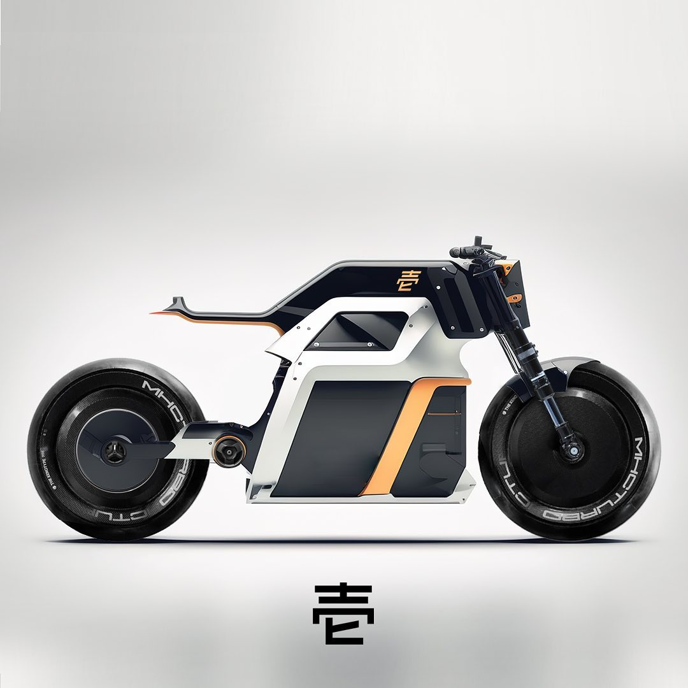
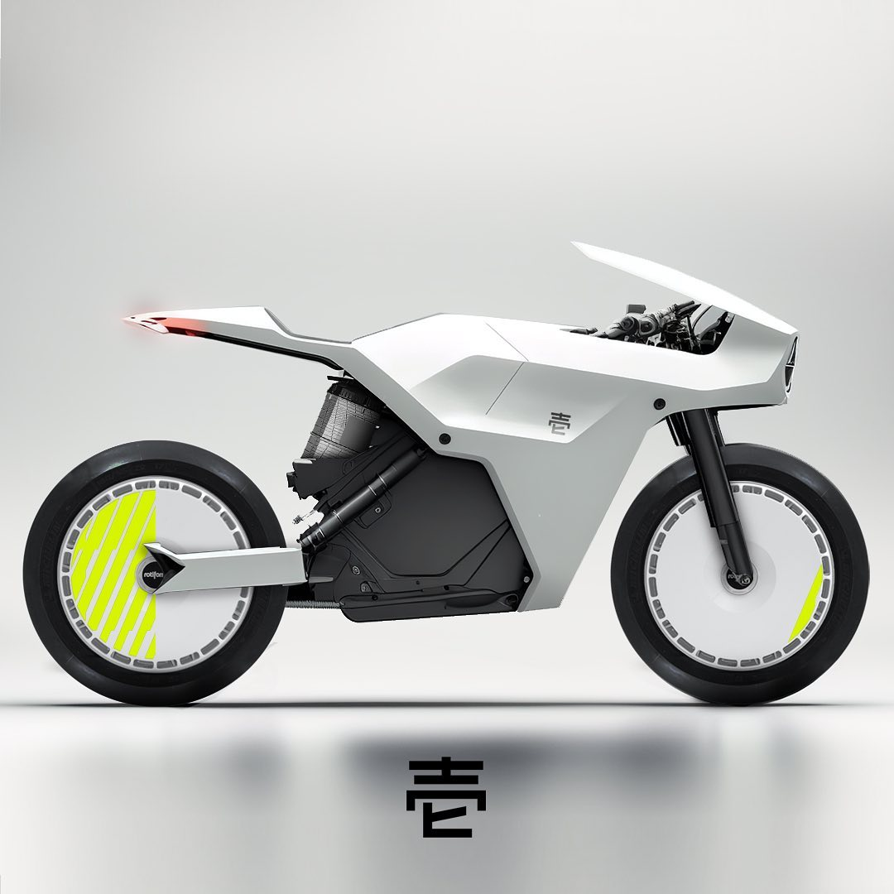
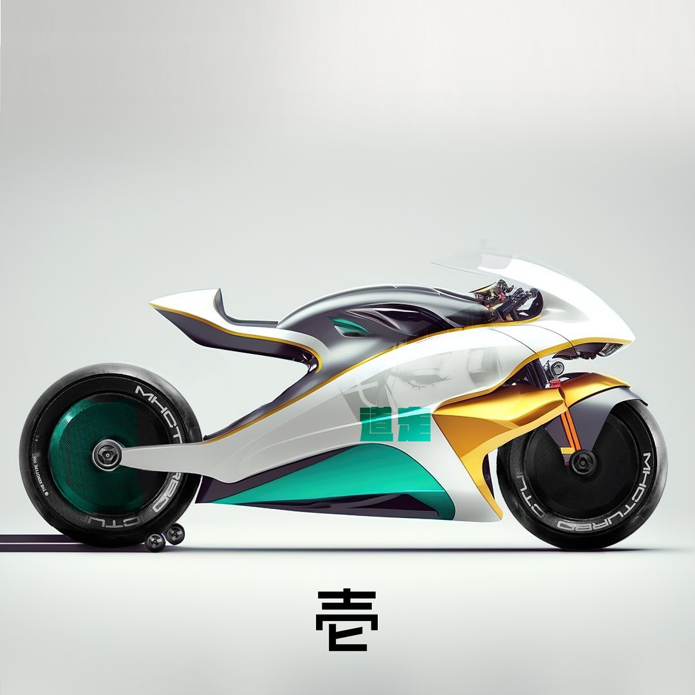
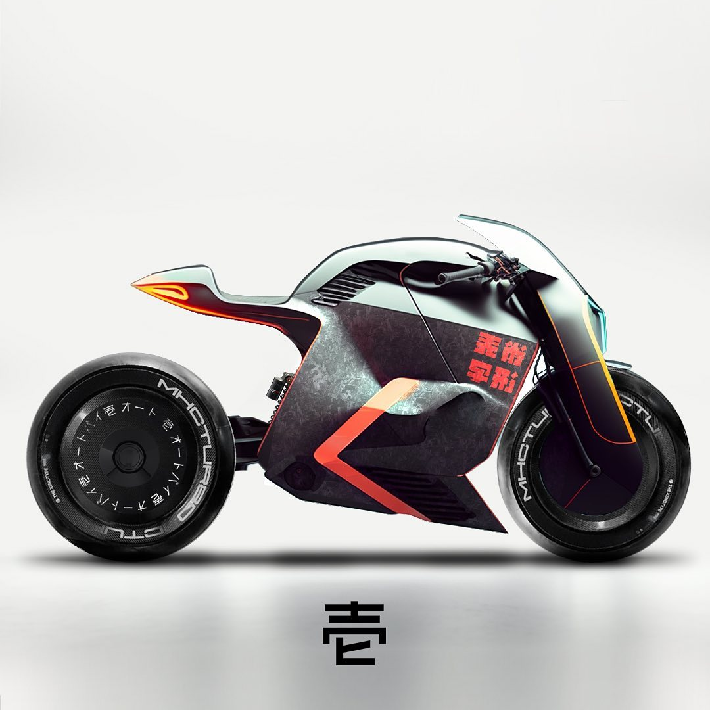
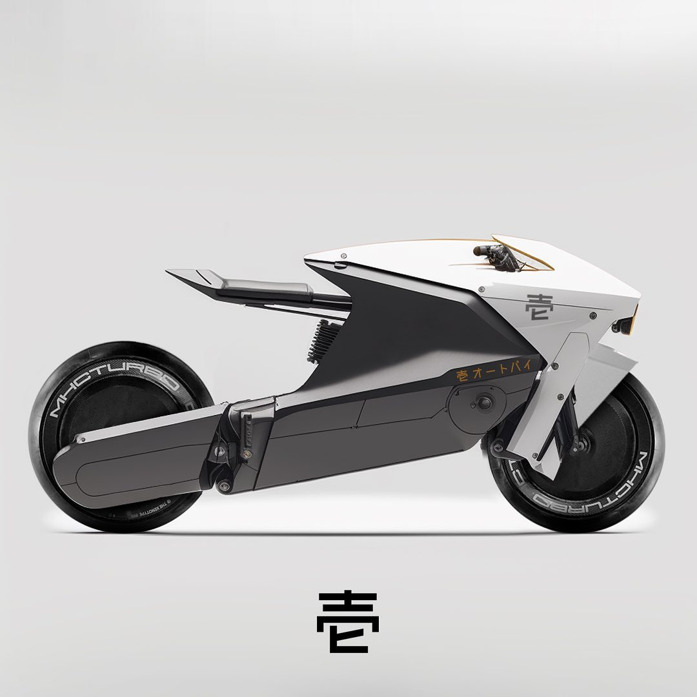
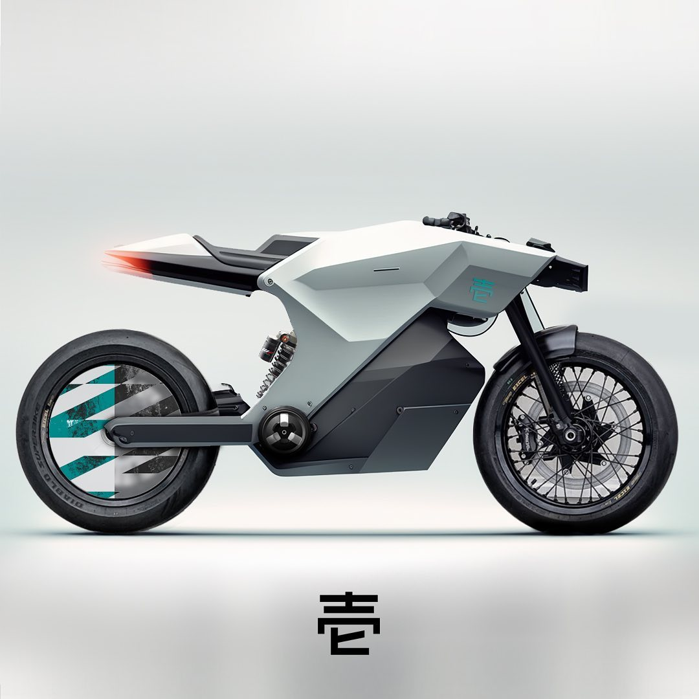

Dākuhōsu ダークホース
Ingeniería brutalista reducida a su máxima expresión. No sigue tendencias; las destruye. Diseñada para quienes entienden que el futuro no se espera, se domina.
Ver detalles
YOUR WAY TO FREEDOM
Explora nuestra gama de motos, cada una diseñada para ofrecer una experiencia única en la carretera. Desde la potencia bruta de nuestras deportivas hasta la versatilidad de nuestras urbanas, tenemos la moto perfecta para cada tipo de conductor.
Ingeniería brutalista reducida a su máxima expresión. No sigue tendencias; las destruye. Diseñada para quienes entienden que el futuro no se espera, se domina.
Ver detalles
Diseñada para los amantes de la velocidad y la adrenalina. Con un diseño aerodinámico y tecnología de punta, esta moto deportiva ofrece un rendimiento excepcional en cada curva y recta.
Ver detalles
La elección perfecta para los que buscan estilo y comodidad en la ciudad. Con su diseño moderno y características funcionales, esta moto urbana es ideal para desplazamientos diarios y viajes cortos.
Ver detalles
Corriente eléctrica convertida en instinto puro. Sin ruido, sin humo, sin límites. La Kōsen redefine el las calles para una era donde el poder no se escucha, se siente. Cada terreno es su territorio.
Ver detalles
Geometría de precisión quirúrgica envuelta en blanco absoluto. Los detalles en neón no son decoración — son una advertencia. La Hakujin no compite, ejecuta.
Ver detalles
Oro, jade y velocidad absoluta. La Kasai no necesita presentación — su silueta lo dice todo. Aerodinámica esculpida para devorar circuitos y dejar rastro de leyenda. El fuego tiene forma.
Ver detalles
Lo que no se puede explicar, solo sentir. La Yūgen es arte callejero en movimiento — oscura, imprevisible, cargada de tensión. Para los que entienden que la ciudad no es un destino, es un escenario.
Ver detalles
Silencio hecho forma. Líneas que cortan el aire sin pedirle permiso. La Shizuku es la moto para quien no necesita llamar la atención — porque ya la tiene. Elegancia sin esfuerzo, precisión sin ruido.
Ver detalles
La sombra que nadie ve venir. Geometría facetada para absorber cada impacto, detalles en jade para marcar el territorio. La Kage domina donde el asfalto termina y el caos empieza.
Ver detallesUsa el código ICHIBAN15 en tu reserva y obtén un 15% de descuento en tu primer modelo. Oferta válida hasta el 31 de diciembre de 2026.
Reservar ahora